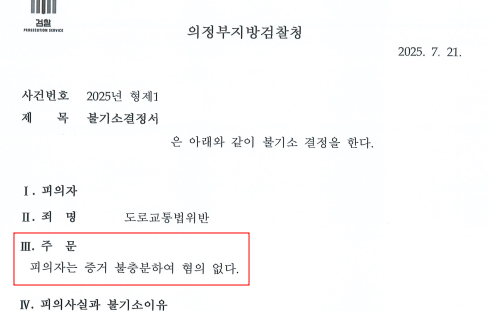
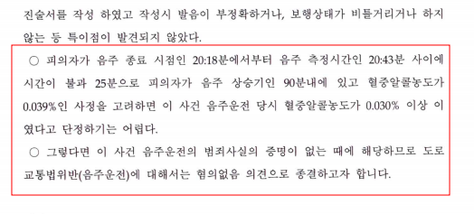

사건 개요
의뢰인 음주운전 현장 적발되어 최초 0.039% 측정되었으나 '위드마크' 공식을 이용하여 0.03% 미만으로 줄여 불송치
의뢰인 술을 마신 후 운전 중 현장 적발되어 당시 호흡 측정 결과 혈중 알코올 농도가 0.039%로 측정 되었습니다.
이에 의뢰인 과거 동종 전과가 있었기에 혈중 알코올 농도와 관계없이 면허가 취소 될 위기에 처하게 되어 변호인을 선임하게 되었습니다.
변호인은 이 사건 사실관계를 면밀하게 살펴본 후 최초 의뢰인이 현장에서 진술한 내용을 바로 잡는 등 최대한 유리한 사실관계를 진술하도록 하였고 이를 바탕으로 수사기관에 선제적으로 의견서를 제출하여 '위드마크' 공식에 의하는 경우 당시 의뢰인이 0.03% 이상의 혈중 알코올 농도로 운전을 하였다고 확신 할 수 없음을 주장하였습니다.
수사기관은 변호인의 의견을 모두 받아들여 음주운전 혐의에 있어 불송치하였고 사건을 살펴본 검찰이 경찰로 사건기록을 반환하여 사건이 종결되었습니다.


※ 구체적인 사건은 사실관계에 따라 달라질 수 있습니다.

 한석일 대표변호사
한석일 대표변호사